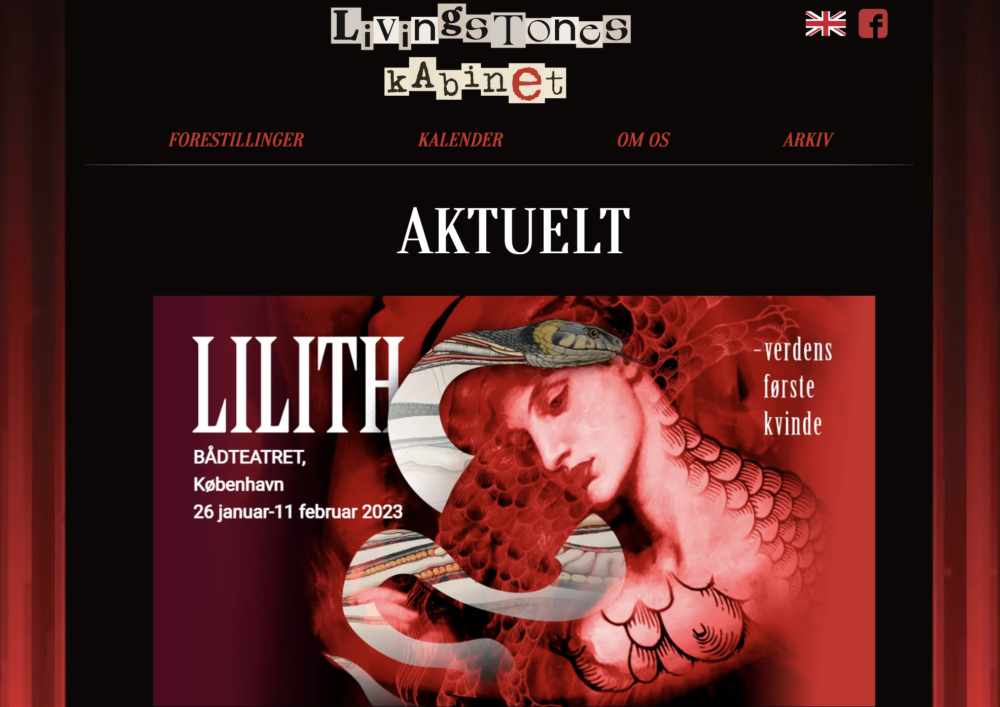
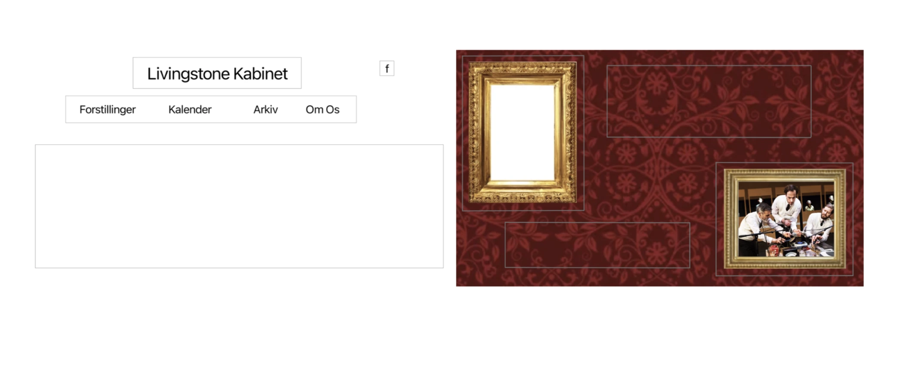
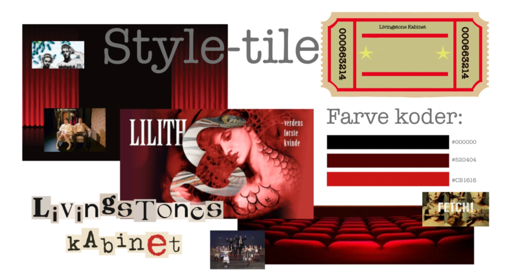

TEMA 5
Grundlæggende Indhold
tema 5 i denne opgave arbejde vi i grupper, sammen lavede vi et redesign og en forbedret brugeropleve af en virksomheds hjemmeside (i vores tilfælde var det teatergruppen Livingstone Kabinet). Min hovedrolle i gruppen var Scrum Master og for at bibeholde overblikket, lænede jeg mig op af UX Design og arbejdsproces. Derfor fulgte vi slavisk metoderne; research, ideer, løsninger, test og til sidst pitch. På den måde vidste hvert medlem hele tiden hvor langt vi var i forløbet og vores målsætning kunne blive opretholdt. Det sværeste var (svar) som jeg derfor var ekstra opmærksom på at blive bedre til var Github. I gruppen oplevede vi, at det var svært at arbejde med det, hvis ikke man var til stede i samme rum. Der kom for mange merche errors hvis ikke vi kunne aftale hvem der gjorde hvor og hvornår inde på VS code.
  